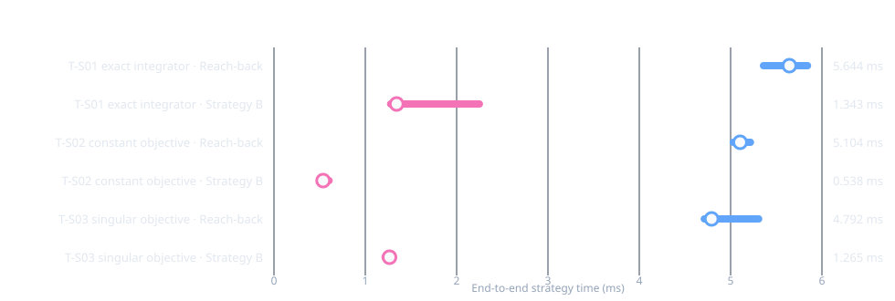
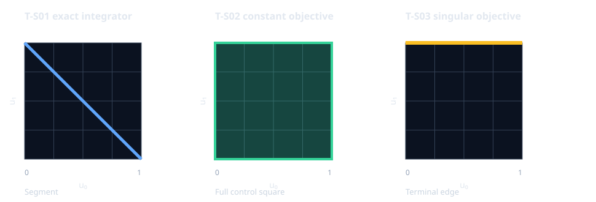

REVIEW-05 · paired synthesis profiles
Three exact integrator profiles
Scope. Each profile has one scalar state, one scalar control, and a two-step horizon. This matrix changes the objective and optimal-family shape; it does not vary problem dimension or horizon. Every measured attempt returned a registry-verified complete family and two distinct witnesses that passed original-problem binding, feasibility, and objective checks. Assurance is numerical.
End-to-end timings
The interval includes strategy preparation, workspace creation, family construction and registered verification, selection of two distinct histories, and original-problem witness checks. It excludes process startup, shared scenario/provider setup, serialization, build, and rendering.

| Profile | Reach-back | Strategy B | Optimal control-history set |
|---|---|---|---|
| T-S01 exact integrator | 5.644 ms (5.360–5.842) | 1.343 ms (1.277–2.249) | Segment |
| T-S02 constant objective | 5.104 ms (5.029–5.217) | 0.538 ms (0.515–0.603) | Full control square |
| T-S03 singular objective | 4.792 ms (4.712–5.307) | 1.265 ms (1.217–1.287) | Terminal edge |
Across these tiny profiles, Strategy B has the lower median in each case. The performance conclusion remains inconclusive: five or seven pairs per profile and no source-attributed limiter profile do not support a general ranking. The spread and phase data are in checks.json; complete attempts are in T-S01 JSONL, T-S02 JSONL, and T-S03 JSONL.
Optimal control histories
Both axes are control values: horizontal u₀, vertical u₁.
These are analytic projections of the complete profiles, not reachable-state plots.

The canonical H relations have five joint coordinates. Source declarations specify respectively 4 inequality and 4 equality rows (10 nonzeros) for T-S01, 4 and 3 rows (11 nonzeros) for T-S02, and 2 and 4 rows (7 nonzeros) for T-S03. These are static canonical sizes, not measured allocation or matrix-byte counts. All three fixtures have the same state/control dimension and horizon, so they are not an output-growth sweep.
Method and limits
- T-S01: quadratic terminal objective; optimal control histories form
u₀+u₁=1. - T-S02: constant objective; every control pair in
[0,1]²is optimal. - T-S03: singular terminal objective;
u₁=1whileu₀remains free. - One excluded warmup pair per profile; 7 measured pairs for T-S01 and 5 for each remaining profile. Side order alternates within each profile.
- One backend thread; per-process 300-second CPU and wall limits and 8 GiB address-space limit. All processes completed under 0.1 seconds.
- No profiler or internal LP/convex call counters were collected. The measured medians are descriptive and do not establish scalability or a general strategy winner.
Source commit 809c83d6f7d353e54b354dd7af4381a95534bf26; build and host details are in
build-configuration.txt. Reproduction:
benchmarks/reporting/review05/capture_profile_matrix.py followed by
benchmarks/reporting/review05/check_profile_matrix.py.